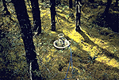

P.I.(s): Paul G. Jarvis, John B. Moncrieff -- University of Edinburgh
Co-I(s): Jonathan M. Massheder, Mark Rayment, Sophie Hale, Steve Scott -- Univ. of Edinburgh
Objectives: To measure and model the CO2 exchanges of boreal black spruce forest and to determine whether the soils and vegetation are significant global sinks for atmospheric CO2. Stand CO2 fluxes were measured using eddy covariance and respiration components were measured using chamber based techniques. The CO2 concentration profile were also measured to allow estimation of the atmospheric storage of CO2 within the canopy. Further measurements of the photosynthetic components and of stand structure and radiation properties were obtained by collaboration with other groups. These measurements will be used to construct carbon budgets and to test models (especially Maestro) that will be used to scale up the carbon budgets in space and time.
 A CO2 flux chamber instrument at SSA-OBS
Get some TF-9 data using FTP (BOREAS Investigators only, password required). [FTP Help]
Objectives:
To measure and model the CO2 exchanges of boreal black spruce forest to determine whether the soils and vegetation are significant global sinks for atmospheric CO2. Stand CO2 fluxes were measured using eddy covariance and the CO2 concentration profile was also measured to allow estimation of the atmospheric storage of CO2 within the canopy. These measurements will be used to verify scaling up procedures from leaf level measurements and may be scaled up to regional scales.
Types of Data Collected and Equipment Used:
| Variable | Sensor |
|---|---|
| Net radiation | 2 REBS Q6 net radiometers |
| Total solar radiation | LiCor pyranometer, Kipp solarimeter |
| Photosynthetic Photon Flux Density | LiCor quantum sensor |
| Wind direction | Vector instruments windvane |
| Wind speed | Vector instruments cup anemometer |
| Air temperature | Psychrometer developed at Edinburgh Univ. |
| Wet bulb temperature | Psychrometer developed at Edinburgh Univ. |
| Soil temperatures | Probe developed at Edinburgh Univ. |
| Soil heat flux | 7 REBS heat flux plates |
| Precipitation | Cassella tipping bucket rain gauge |
Measurement Sites and Periods:
All measurements were made at the Southern Study Area Old Black Spruce site. The measurements were made almost continuously from 23 May until 19 September 1994 except the soil and stem CO2 efflux, which were made at sub intervals of the above period.
Known Problems and Caveats:
Eddy covariance is used to measure the flux through a horizontal plane, placed above the canopy. In very stable conditions, i.e. cloudless nights with little wind, there is almost no such flux. In such conditions the storage of CO2 in the canopy is measured to estimate the flux in and out of the biological system. However, in extremely stable conditions this storage of CO2 also appears to be underestimated. Simple modeling can be used to circumvent this problem.
TF Overview || TF-1 | TF-2 | TF-3 | TF-4 | TF-5 | TF-6 | TF-7 | TF-8 | TF-9 | TF-10 | TF-11
 Send a data request to the BOREAS Data Manager (BOREAS Investigators only)
Send a data request to the BOREAS Data Manager (BOREAS Investigators only)
E-Mail a comment on this page to the curator 
Send e-mail to Fred Huemmrich, the BORIS representative for the TF group
Return to the TF Overview
Return to the BOREAS Science Groups Overview
Return to the BOREAS Home Page
Last Updated: October 30, 1997
{kind=link}